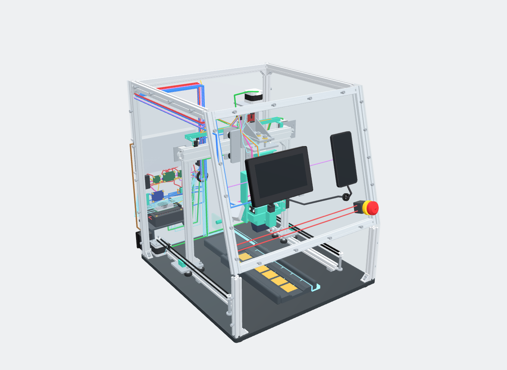
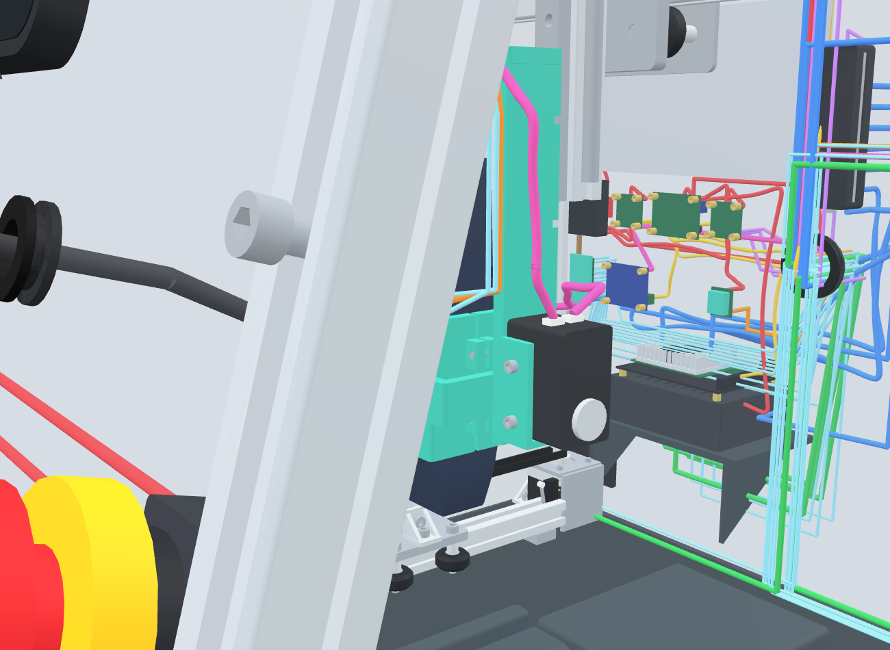
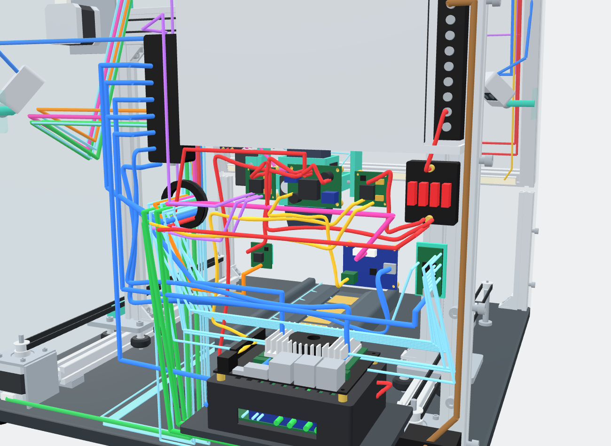

3D Model
Turn the CAD model around in the browser, or download it.
This is the actual CAD model (version 6), not an illustration. Drag to turn it, scroll or pinch to zoom, and right-drag or two-finger drag to slide it sideways.
Renders



CAD files
STEP files open in Onshape, Fusion, SolidWorks and FreeCAD. Each version's download holds two files, one with every wire modelled and a lighter one without.
| Download | What is inside | Size |
|---|---|---|
| Butterfly iQ3 version | STEP files, with and without wiring | 9 MB |
| GE Vscan Extend version | STEP files, with and without wiring | 8 MB |
| Printable parts and source | STL files for both versions and the CadQuery scripts that build the model | 0 MB |
How the model is made
The model is written as a Python script using CadQuery, so every dimension is a named number that can be changed and rebuilt. Two automatic checks run on every version. The first looks for any two parts that overlap. The second moves the machine through 579 poses across the full travel of all six axes and looks for collisions at each one. Version 6 passes both for the Butterfly and Vscan versions.